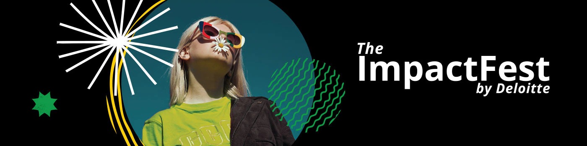

The impact Fest by Deloitte
¡Hola a todos! Queremos compartir con ustedes nuestra experiencia en The Impact Fest, un evento organizado por Deloitte que tuvo lugar el pasado fin de semana en Comet Retiro. Aquí haremos un breve resumen pero en los apartados de esta web podras conocer información más detallada sobra cada aspecto del evento.
The Impact Fest fue mucho más que una conferencia o un simple encuentro. Fue una experiencia inmersiva diseñada para conectar a jóvenes talentos con su propósito, valores y empatía, tanto en el ámbito profesional como personal. Durante una tarde llena de actividades, exploramos diferentes aspectos de nuestro desarrollo personal y profesional, todo ello en un ambiente dinámico y colaborativo.
El evento tuvo lugar el jueves 25 de abril comenzando puntualmente a las 15:30 horas y acabando a las 20:00 horas. El lugar escogido fue Comet Retiro, situado en la calle Alfonso XII, 30, en el barrio del Retiro, Madrid, 28014. Un edificio disruptivo, inspirador e innovador dedicado exclusivamente a las reuniones y eventos de empresa.
En la previa del evento e inlcuso durante toda la duración de este dispusimos de un pequeño catering compuesto de café, todo tipo de refrescos, chuches, chocolatinas, pan, etc.
Desde el momento en que llegamos, fuimos recibidos por un equipo entusiasta que nos hizo sentir bienvenidos. La dinámica de formar equipos y tener un mentor asignado desde el principio generó un ambiente de colaboración y apoyo mutuo.
Recorrimos diversos espacios dentro de Comet Retiro, cada uno dedicado a explorar un aspecto diferente de nuestro desarrollo personal y profesional. Desde actividades gamificadas hasta sesiones de reflexión profunda, cada momento fue una oportunidad para crecer y aprender.
Uno de los aspectos más destacados fue la diversidad de los participantes y la inclusión de todas las voces. Pudimos conocer a personas con distintos trasfondos y experiencias, lo que enriqueció enormemente nuestras conversaciones y debates.
The Impact Fest superó todas nuestras expectativas. Nos llevamos no solo nuevos conocimientos y herramientas, sino también una red de contactos y amigos que seguirán siendo parte de nuestra trayectoria personal y profesional. Recomendamos encarecidamente este evento a todos los jóvenes que buscan conectar con su propósito y hacer un impacto positivo en el mundo.